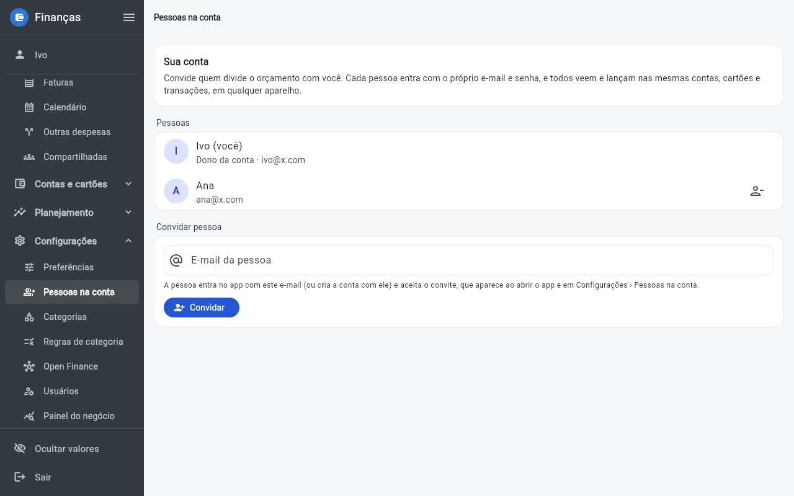
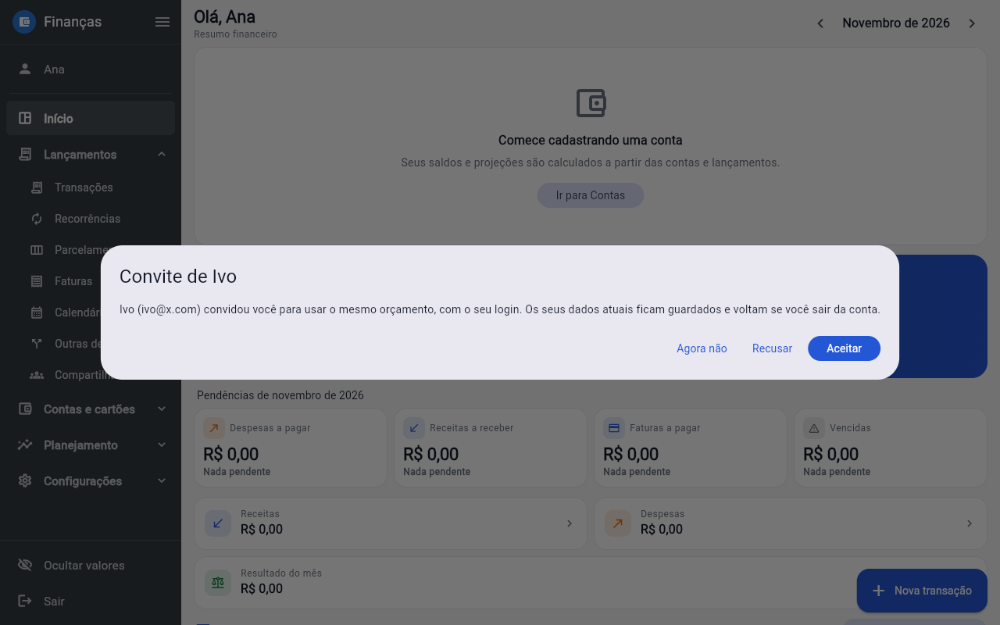
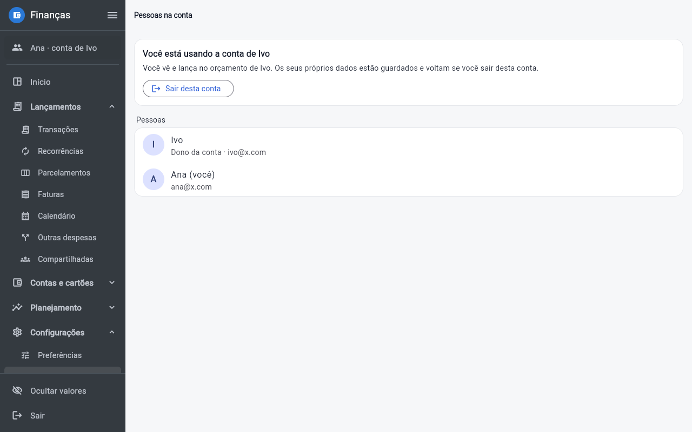

App Finanças · atualizado em 25 de novembro de 2026
Este manual mostra, passo a passo, como fazer cada coisa no app. Use o índice para ir direto ao que precisa. O app abre em ivoalexandre86-bit.github.io/financas-app, no computador ou no celular.
Como ler os caminhos:Configurações › Pessoas na conta quer dizer: abra o menu lateral (ícone ☰ no topo, à esquerda), toque na seção Configurações e depois em Pessoas na conta.
1. Compartilhar: qual opção usar
O app tem três formas de “compartilhar”. Escolha pela situação:
Situação
Use
Vocês dividem o mesmo orçamento (ex.: casal com contas em comum) e todos devem ver e lançar tudo.
As duas primeiras opções só funcionam com a conta na nuvem (entrando com e-mail e senha). Na conta de demonstração elas não aparecem.
2. Convidar pessoas para a sua conta
Todos que estão na conta veem e lançam nas mesmas contas, cartões e transações, cada um com o próprio e-mail e senha, em qualquer aparelho. Cabem até 5 pessoas além do dono.
Quem convida (dono da conta)
Abra Configurações › Pessoas na conta.
Em Convidar pessoa, digite o e-mail da pessoa.
Toque em Convidar. A pessoa aparece na lista como “Convite pendente”.
O app não manda e-mail sozinho. Avise a pessoa: toque no ícone de copiar mensagem de convite ao lado do nome dela e cole no WhatsApp ou e-mail. A mensagem já traz o link do app.

Tela do dono: lista de pessoas e o campo para convidar.
Quem foi convidado
Abra o app e entre com o mesmo e-mail que recebeu o convite. Se ainda não tem conta, toque em Criar conta usando esse e-mail.
Ao entrar, aparece a janela Convite de …. Toque em Aceitar.
Pronto: o menu passa a mostrar “Seu nome · conta de …” e você vê o orçamento compartilhado.
Se tocou em Agora não, o convite continua em Configurações › Pessoas na conta, com os botões Aceitar e Recusar.

O convite aparece logo ao entrar no app.
Os dados que a pessoa convidada já tinha não se perdem: ficam guardados e voltam se ela sair da conta compartilhada.
Sair, remover ou cancelar convite
Membro quer sair:Configurações › Pessoas na conta › Sair desta conta. O que ele lançou continua na conta do dono.
Dono quer remover alguém: na lista, toque no ícone de remover ao lado da pessoa e confirme.
Cancelar convite pendente: mesmo ícone, na linha “Convite pendente”.

Visão de quem entrou na conta de outra pessoa.
Liberar só alguns cartões e contas
Ao convidar alguém para a sua conta (pelo e-mail ou pelo WhatsApp), escolha Só o que eu escolher e marque os cartões e contas que a pessoa pode usar. Ela vê apenas esses cartões e contas, os lançamentos deles (movimentações, faturas, parcelamentos e recorrências) e as categorias, e só consegue lançar neles, no app e pelo WhatsApp. Orçamentos, metas, patrimônio, outras contas e cartões e as suas configurações ficam escondidos.
Para mudar depois: Configurações › Pessoas na conta, toque no ícone de ajuste (⚙︎) ao lado da pessoa. Quem entrou pelo WhatsApp também aparece em Configurações › Usuários › Convidar pelo WhatsApp, com o mesmo botão Editar acesso.
Convidar pelo WhatsApp (quem ainda não tem conta)
O administrador pode chamar alguém pelo número do WhatsApp. O bot manda uma mensagem dizendo que a pessoa foi selecionada para participar do sistema de gestão financeira, com o botão Fazer cadastro.
Abra Configurações › Usuários › Convidar pelo WhatsApp e toque em Convidar.
Informe o nome e o WhatsApp (DDD + número; de outro país, comece com +).
Ligue Usar o meu orçamento se a pessoa deve lançar no seu orçamento. Escolha o que ela pode ver e usar: Só o que eu escolher (marque os cartões e contas) ou Todo o orçamento. Desligado, ela cria um orçamento próprio.
Toque em Enviar convite. A lista mostra a situação: Enviado, Entregue, Lido, Falhou, Vencido ou Cadastrado.
A pessoa toca em Fazer cadastro, o app abre com o nome dela preenchido, ela informa e-mail e senha e pronto: o WhatsApp dela já fica ligado ao bot (pode mandar gastos na hora). Se ela escrever para o bot antes de se cadastrar, o bot responde com o link de novo.
Mensagem em análise na Meta: o WhatsApp só deixa o bot iniciar conversas com uma mensagem aprovada pela Meta. Enquanto ela está em análise, o convite fica registrado e o app oferece Abrir o WhatsApp: o seu próprio WhatsApp abre com o texto e o link prontos. Pelo menu de cada convite (⋮) dá para reenviar pelo bot, enviar pelo seu WhatsApp, copiar o link ou cancelar. O convite vale por 7 dias.
3. Despesas compartilhadas (dividir contas)
Aqui cada pessoa continua com o próprio orçamento. Vocês criam um grupo (Casa, Casal, Apartamento 302…) e as despesas lançadas nele são divididas por percentual. Ninguém vê o seu orçamento particular, só as despesas do grupo.
Tudo fica em Lançamentos › Movimentações, botão Compartilhadas, com as abas Despesas, Resumo e Grupos.
Passo 1: criar o grupo
Abra Lançamentos › Movimentações e toque em Compartilhadas.
Na aba Grupos, toque em Novo grupo (ou Criar grupo).
Dê um nome (ex.: “Casa”) e toque em Criar. O grupo já vem com categorias padrão (moradia, luz e água, internet, mercado…).
No plano Grátis cabe 1 grupo. Para mais grupos, é preciso o plano Básico.
Passo 2: convidar os participantes
Abra o grupo e toque em Convidar participante.
Digite o e-mail da conta no app da pessoa (ela precisa ter conta no app).
Escolha o papel:
Gestor: lança despesas e ajusta percentuais.
Participante: vê as despesas do grupo e registra o pagamento da própria parte.
Toque em Convidar. Avise a pessoa por mensagem.
Para quem foi convidado: abra Lançamentos › Movimentações › Compartilhadas. Aparece o aviso “Você tem convite pendente na aba Grupos”. Vá na aba Grupos e toque em Aceitar.
Passo 3: definir quanto cada um paga
No grupo, vá em Percentuais por categoria.
Toque na categoria (ex.: Moradia) e informe o percentual de cada pessoa. Os percentuais precisam somar 100%.
Salve. As próximas despesas dessa categoria usam essa divisão.
Quem ainda não aceitou o convite já entra na divisão. Se recusar, a parte dela volta para o dono do grupo.
Passo 4: lançar uma despesa compartilhada
Despesa nova:
Em Compartilhadas, toque em Nova despesa.
Preencha como uma despesa comum (descrição, valor, data, conta ou cartão) e toque em Continuar para a divisão.
Escolha o grupo e a categoria do grupo. Se quiser uma divisão diferente só desta vez, ligue Divisão diferente só nesta despesa.
Toque em Compartilhar.
Despesa que já foi lançada: toque no botão pequeno Compartilhar despesa já lançada (acima de “Nova despesa”), escolha a despesa e siga os passos 3 e 4. Outra forma: abra a despesa em Movimentações e toque no ícone Compartilhar no topo.
Despesa que se repete (aluguel, internet): abra a recorrência em Lançamentos › Recorrências e toque em Compartilhar. As próximas ocorrências entram no grupo sozinhas.
Compra no cartão: continua uma única vez na sua fatura. Os outros veem só “Cartão de crédito” e a parte deles.
Passo 5: registrar pagamentos e acertar contas
Pagar uma parte: abra a despesa na aba Despesas e registre o pagamento (data, valor e observação, ex.: “Pix”). Só a própria pessoa, quem pagou a conta ou um gestor podem registrar.
Acertar tudo de uma vez: no grupo, toque em Acertar contas, escolha quem paga, quem recebe e o valor transferido, e toque em Registrar. O acerto quita as partes mais antigas primeiro.
Errou? Em Acertos, use Desfazer acerto; as partes voltam a ficar em aberto.
A aba Resumo mostra, por mês, por categoria e por participante, quanto cada um deve e tem a receber. No seu orçamento, a sua parte aparece como despesa pendente e o que os outros te devem aparece como receita a receber.
4. Dependentes (cartão adicional)
Dependentes são pessoas que usam o seu cartão ou conta mas não entram no app (ex.: cartão adicional). Você marca quem usou cada compra e a fatura mostra o total de cada um.
Abra Contas e cartões › Cartões (ou Contas) e toque no cartão (ou na conta).
Logo abaixo dos dados do cartão fica o quadro Dependentes. Toque em Adicionar dependente, informe o nome e, se quiser, o final do cartão adicional, e toque em Salvar. Pronto: já fica gravado.
Para mudar o nome, toque no dependente; para tirar, toque no X. (Também dá para fazer isso em Editar o cartão.)
Ao lançar uma compra nesse cartão, aparece o campo Quem usou. Escolha a pessoa (em branco = titular).
Na fatura, a seção Por pessoa mostra quanto cada um gastou. Em Movimentações, há a coluna e o filtro Quem usou.
O dependente lança pelo WhatsApp
Ao adicionar (ou tocar para editar) o dependente, preencha WhatsApp (opcional) com DDD e número, por exemplo (11) 99999-1234.
Passe ao dependente o número do bot (o mesmo de Lançar pelo WhatsApp). Ele não precisa vincular nada nem ter login.
Quando ele mandar um gasto (texto, foto do cupom ou áudio), o bot mostra o resumo com Quem usou = o nome dele e, depois do Confirmar, grava no seu orçamento, no cartão (ou conta) em que ele é dependente.
Se ele for dependente em mais de um cartão, vai para o primeiro; ele pode dizer qual (“uber 23 no cartão Inter”) ou tocar em Corrigir.
Pelo número do dependente o bot lança só despesas. Resumo do mês, boletos e despesas compartilhadas ficam com o titular. Os lançamentos dele contam no limite mensal do seu plano.
O dependente não tem login: ele não entra no app. Se a pessoa precisa entrar e ver ou lançar no mesmo orçamento, convide-a em Pessoas na conta.
5. Criar conta, entrar e sair
Abra o app e toque em Criar conta (recebeu um convite pelo WhatsApp? Toque em Fazer cadastro na mensagem).
Informe nome, e-mail e senha (mínimo de 8 caracteres, com letras e números), confirme a senha e aceite os termos.
Toque em Criar conta. Seus dados ficam na nuvem: entre com o mesmo e-mail em qualquer aparelho para ver tudo.
Só quer conhecer? Na tela de entrada, toque em Explorar com dados de exemplo. São dados fictícios, separados das contas reais.
Sair: no fim do menu lateral, toque em Sair.
Trocar a senha:Configurações › Preferências › Alterar minha senha.
Configurações: Preferências, Pessoas na conta, Categorias, Regras de categoria, Open Finance.
No fim do menu lateral fica o Manual do usuário (esta página).
A tela Início mostra o saldo atual, as pendências do mês (despesas a pagar, receitas a receber, faturas a pagar e vencidas), receitas, despesas, resultado do mês e os próximos vencimentos. Use as setas no topo para trocar o mês. No fim do menu, Ocultar valores esconde os números (útil em público).
7. Contas bancárias
Abra Contas e cartões › Contas e toque em Nova conta.
Informe o nome da conta, a instituição, o tipo e o saldo inicial (o saldo de hoje no banco).
Toque em Salvar.
Ajustar saldo: se o saldo do app não bate com o banco, toque na conta e em Ajustar saldo. Informe o saldo real e toque em Ajustar: o app lança a diferença como “Ajuste de saldo” (receita ou despesa, na data de hoje), e o novo saldo já entra no Patrimônio. Para desfazer, exclua esse lançamento.
Dependentes da conta: na mesma tela, quadro Dependentes (veja Dependentes).
Transferir entre contas: na conta, use Transferir, ou lance uma transação do tipo Transf.
Não usa mais a conta? Edite e desligue Conta ativa. Contas com lançamentos não podem ser excluídas; contas inativas não somam no saldo.
Ver contas inativas: a tela mostra só as contas ativas. Toque em Filtros (canto superior direito) e, em Situação, escolha Inativos ou Todos. O app lembra a escolha.
8. Cartões de crédito
Abra Contas e cartões › Cartões e toque em Novo cartão.
Preencha nome, banco emissor, bandeira, final, limite de crédito, dia de fechamento e dia de vencimento.
Escolha a conta de pagamento padrão (de onde sai o dinheiro da fatura) e toque em Salvar.
Ao abrir o cartão você vê o limite disponível, o melhor dia de compra, a fatura atual, as anteriores e as futuras (projetadas). Mudar fechamento ou vencimento reorganiza as compras nas faturas automaticamente.
Cartões inativos: a tela mostra só os cartões ativos. Para ver os inativos, toque em Filtros (canto superior direito) e, em Situação, escolha Inativos ou Todos. O app lembra a escolha.
9. Lançar despesas, receitas e transferências
Toque em Nova transação (botão azul no Início ou em Movimentações).
Escolha o tipo: Despesa, Receita ou Transf.
Preencha descrição, valor (dá para fazer contas no campo, ex.: 45+12), data, categoria e a conta ou cartão.
Escolha o status: concluída (já pagou/recebeu) ou pendente. Compras no cartão ficam pagas quando a fatura é paga.
Opcional: data de vencimento, observações, código do boleto ou foto do comprovante (Ler comprovante preenche os dados sozinho).
Toque em Salvar.
No mesmo formulário você pode ligar Compra parcelada ou Tornar recorrente (veja as seções 12 e 13).
10. Movimentações: ver, filtrar e editar
Lançamentos › Movimentações reúne tudo. Os botões no topo trocam a visão: Todos, Transações, Outras despesas, Outras receitas e Compartilhadas.
Buscar: ícone de lupa (descrição, categoria ou valor).
Filtrar: ícone de filtros (tipo, status, categoria, conta/cartão, projeto, quem usou). Filtros ativos aparecem como etiquetas; toque no X para tirar.
Filtros rápidos: Receitas/Despesas, Pendentes/Concluídas e por categoria.
Editar direto na lista: toque numa célula (valor, data, categoria, status) para mudar sem abrir o lançamento.
Escolher colunas: menu Opções › Configurar colunas.
Abrir um lançamento: toque na linha para ver os detalhes, editar, excluir ou compartilhar.
Não aparece uma receita ou despesa? Confira se não há um filtro ativo (número no ícone de filtros) e use Limpar filtros.
Outras despesas: recorrência, mês a mês e valores por pessoa
No botão Outras despesas ficam as contas que você paga e divide com outras pessoas (ex.: apartamento dividido com a família).
Repetir todo mês: em Nova despesa escolha Recorrente (mensal, bimestral, anual...) e a quantidade de meses. Para uma despesa que já existe, abra-a, toque no lápis (Editar) e use Repetir nos próximos meses: ela vira o 1º mês da série e os pagamentos já registrados continuam nela.
Ver por pessoa sem abrir: na Grade, toque na seta ⌄ da linha. Abre logo abaixo a parte de cada pessoa, quanto já pagou, quanto falta e a situação.
Mês a mês: troque a visão para Mês a mês. Os meses viram colunas, como na Projeção (12 meses a partir do mês escolhido no filtro, ou o ano inteiro). Toque no nome de uma despesa para abrir as linhas de cada pessoa; o ícone ao lado de Lançamento abre ou recolhe todas. Em Por pessoa, cada pessoa abre as despesas dela. Toque num valor para abrir aquele mês.
11. Faturas do cartão
Lançamentos › Faturas lista as faturas de todos os cartões, com vencimento, total, pago e restante.
Pagar uma fatura
Abra a fatura (Abrir fatura).
Toque em Marcar como paga, confira a conta de origem e a data do pagamento e confirme.
Pagou só uma parte? Use Pagamento parcial e informe o valor pago. O restante segue para quando for quitado.
Errou? Desfazer pagamento devolve o valor ao saldo da conta.
Dentro da fatura você também pode Adicionar compra ou Adicionar recorrência (assinatura no cartão). As compras do cartão contam no mês em que a fatura é paga (ou no vencimento, enquanto não for paga).
12. Compras parceladas
Em Nova transação, escolha Despesa e ligue Compra parcelada.
Informe o valor total da compra e o número de parcelas.
Salve. No cartão, cada parcela vai para uma fatura; na conta, cada parcela tem seu vencimento.
Lançamentos › Parcelamentos mostra cada compra, as parcelas pagas, a próxima e o restante a pagar. Para mudar o valor total ou o número de parcelas, abra o parcelamento e edite (editar uma parcela só muda aquela parcela).
13. Recorrências (salário, aluguel, assinaturas)
Abra Lançamentos › Recorrências e toque em Nova recorrência (ou ligue Tornar recorrente numa transação).
Escolha Despesa ou Receita, a descrição, o valor, a conta ou cartão e a categoria.
Defina a frequência (a cada 1 mês, 1 semana…), o início e, se quiser, o fim e o dia do mês.
Salve. As próximas ocorrências aparecem na projeção e nas movimentações.
Mudou o valor? Edite e escolha se vale para somente ocorrências futuras ou também para as já planejadas.
Pausar e Retomar: nada é gerado enquanto pausada.
Excluir: as futuras deixam de ser geradas; o que já foi pago fica no histórico.
14. Boletos e contas a vencer
Lance a despesa como pendente e informe a data de vencimento.
Se tiver, cole o código do boleto (linha digitável) ou o Pix copia e cola.
Com o WhatsApp vinculado, o app lembra na véspera e no dia do vencimento.
Depois de pagar, mude o status para concluída (na lista, toque no status).
O Lançamentos › Calendário mostra entradas, saídas e faturas de cada dia.
15. Projeção dos próximos meses
Planejamento › Projeção mostra, mês a mês, receitas, despesas, resultado e saldo acumulado, considerando recorrências, parcelas e faturas.
Ver o detalhe: toque em qualquer valor. Abre uma grade com o total do mês por conta e cartão (compras no cartão entram no mês em que a fatura é paga). Use o botão Categoria para ver por categoria. Toque numa linha para ver cada lançamento dela, ou em Ver todos os lançamentos.
Mudar o período: use as setas (1 mês/1 ano) ou Período personalizado.
Simular outro saldo inicial: em Saldo inicial da projeção, informe um valor (ou Usar saldo real).
Filtros: veja a projeção só de algumas contas, cartões ou categorias.
Cartões e contas inativos: ficam fora da projeção. Só o que já foi pago neles continua no histórico dos meses passados.
No plano Grátis a projeção mostra 3 meses; assinando, 12.
16. Fechar mês, ajustar e reverter
Quer corrigir o saldo de uma conta (o que o banco mostra)? Isso é outra coisa: veja Ajustar saldo em Contas.
Fechar um mês congela o resultado: lançamentos feitos ou alterados depois não mudam mais aquele mês em Início, Projeção, gráficos e relatórios. O saldo real das contas não muda.
Fechar um mês
Abra Planejamento › Projeção.
Logo abaixo dos indicadores, toque em Fechar ou reabrir mês e escolha o mês. (Atalho: tocar no nome do mês no cabeçalho da tabela.)
Toque em Fechar mês. O mês fica fechado com os valores calculados agora.
Ajustar o resultado mês a mês
Na Projeção, toque em Ajustar mês a mês. Abre uma grade igual à da Projeção, com os meses nas colunas: receitas, despesas e resultado calculados, e a linha Ajuste (digite).
Na linha Ajuste, digite quanto somar ao resultado de cada mês. Use - para tirar (ex.: -500). Dá para fazer conta, como -120*3.
As linhas Resultado ajustado e Saldo acumulado mudam enquanto você digita. Use as setas para ver outros meses.
Toque em Salvar. Cada mês ajustado fica fechado com o novo resultado. Os ajustes de meses até o atual também entram no Patrimônio, na linha “Ajustes de resultado (meses fechados)”.
Tirar o ajuste de um mês: apague o valor (ou digite 0) e salve. O mês volta ao cálculo automático.
Ajustar receitas e despesas separadas, com observação: na grade, toque no nome do mês.
Reverter (reabrir)
Um mês: toque em Fechar ou reabrir mês, escolha o mês e depois Reabrir mês (reverter), ou Desfazer só o ajuste para mantê-lo fechado com os valores calculados.
Vários de uma vez: na Projeção, toque em Ver ajustes (ou no ícone de relógio com cadeado no topo) e use Reverter ajustes manuais ou Reabrir todos.
17. Orçamentos e metas
Orçamento (limite por categoria):
Abra Planejamento › Orçamentos e toque em Novo orçamento.
Escolha a categoria, o limite por mês e em que percentual quer ser avisado.
Salve. O app mostra gasto, previsto, restante e se vai passar do limite.
Meta de economia: em Planejamento › Metas, crie a meta com o valor alvo e registre aportes conforme guarda dinheiro.
18. Lançar pelo WhatsApp
Abra Configurações › Preferências › WhatsApp.
Toque em Vincular meu WhatsApp. O app mostra uma mensagem com um código (vale por 10 minutos).
Toque em Abrir no WhatsApp e envie a mensagem, do número que quer usar. Depois toque em Já enviei.
Pronto. Mande mensagens ao bot, por exemplo:
“gastei 45,90 no mercado”
“uber 23 ontem no cartão Nubank”
“tênis 600 em 3x no cartão”
“recebi 3500 de salário”
O bot mostra um resumo e só grava depois que você tocar em Confirmar. Também aceita foto do cupom ou comprovante.
Resumo do mês: peça do seu jeito, por exemplo “resumo”, “mande um resumo do mês atual”, “como está meu mês?”, “quanto gastei esse mês?” ou “resumo de outubro”. Os números são os mesmos da Projeção do app sem filtros: compras no cartão contam no mês em que a fatura é paga, pagamento de fatura e transferências não são despesa, o que está em aberto em conta ou cartão inativo fica de fora, e mês fechado ou ajustado usa os valores do fechamento. O resumo também mostra o saldo acumulado no fim do mês.
Na mesma tela você liga os avisos: Lembrete de contas a vencer (todo dia às 8h) e Aviso de orçamento no limite. Para parar, use Desvincular.
Dependentes também podem lançar os gastos deles pelo próprio WhatsApp: cadastre o número no dependente (veja O dependente lança pelo WhatsApp).
Plano Grátis: 5 lançamentos por mês, só por texto.
19. Open Finance (trazer lançamentos do banco)
Pelo Open Finance, do Banco Central, o app lê o extrato das suas contas e cartões. O app nunca pede sua senha bancária.
Abra Configurações › Open Finance e toque em Conectar seus bancos.
Na janela que abre, escolha MeuPluggy e marque as contas e cartões. (Se ainda não tem, crie a conta no Meu Pluggy e autorize seus bancos lá; é gratuito.)
De volta ao app, em cada conta ou cartão do banco, escolha qual conta do app é ela e toque em Sincronizar.
Os lançamentos chegam em Transações para revisar. Em cada um, toque em ⋮ e escolha Importar como novo, Conciliar com lançamento (se você já tinha lançado à mão) ou Ignorar.
Para parar de compartilhar, use Revogar consentimento ou Remover conexão. O que já foi importado continua.
20. Importar planilha
Abra Planejamento › Importar planilha.
Toque em Baixar modelo (.xlsx). Ele vem com listas das suas categorias, contas e cartões.
Preencha a aba “Despesas”, uma despesa por linha. Data, Descrição e Valor são obrigatórios; informe a Conta ou o Cartão (para parceladas, o número de parcelas).
Volte ao app, toque em Selecionar arquivo (.xlsx ou .csv) e confira cada linha. Linhas com problema aparecem em Atenção.
Marque as que quer e toque em Importar.
Importar planilha é do plano Básico.
21. Categorias e regras de categoria
Nova categoria:Configurações › Categorias › Nova categoria. Escolha nome, tipo (Despesa ou Receita), ícone e, para subcategoria, a categoria pai.
Excluir: os lançamentos de uma subcategoria passam para a categoria principal.
Regras de categoria: em Configurações › Regras de categoria, diga que uma palavra na descrição (ex.: “uber”) sempre vai para uma categoria. O app sugere a categoria ao lançar.
22. Preferências, PIN e organizar o menu
Em Configurações › Preferências:
Aparência: claro, escuro ou do sistema.
Lista de transações: agrupar compras do cartão por fatura (padrão) ou mostrar cada compra.
Bloqueio por PIN: pede um PIN de 4 a 8 números ao abrir o app e depois de 2 minutos fora dele.
Ocultar valores: mostra R$ •••• no lugar dos números.
Organizar menu: mude a ordem dos itens com as setas ↑ ↓, mova itens para outra seção, renomeie seções ou crie novas. Voltar ao padrão desfaz tudo.
Excluir minha conta e dados: apaga tudo definitivamente.
23. Dúvidas comuns
Lancei no celular e não aparece no computador.
Confirme que entrou com o mesmo e-mail nos dois. Em Configurações › Preferências, toque em Atualizar agora.
Por que a compra no cartão aparece em outro mês?
O app usa regime de caixa: a compra conta no mês em que a fatura é paga (ou no vencimento, enquanto não for paga).
O pagamento da fatura conta como despesa?
Não. A despesa é a compra; o pagamento só quita a fatura. Transferências também não contam como despesa.
Qual a diferença entre “Pessoas na conta” e “Despesas compartilhadas”?
Em Pessoas na conta todos usam o mesmo orçamento e veem tudo. Em Despesas compartilhadas cada um tem o seu orçamento e só as despesas do grupo são divididas. Veja a tabela da seção 1.